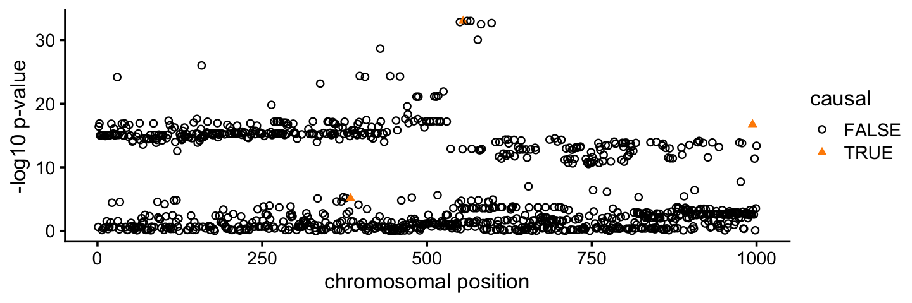

Last updated: 2024-12-18
Checks: 7 0
Knit directory: survival-susie/
This reproducible R Markdown analysis was created with workflowr (version 1.7.1). The Checks tab describes the reproducibility checks that were applied when the results were created. The Past versions tab lists the development history.
Great! Since the R Markdown file has been committed to the Git repository, you know the exact version of the code that produced these results.
Great job! The global environment was empty. Objects defined in the global environment can affect the analysis in your R Markdown file in unknown ways. For reproduciblity it’s best to always run the code in an empty environment.
The command set.seed(20230201) was run prior to running
the code in the R Markdown file. Setting a seed ensures that any results
that rely on randomness, e.g. subsampling or permutations, are
reproducible.
Great job! Recording the operating system, R version, and package versions is critical for reproducibility.
Nice! There were no cached chunks for this analysis, so you can be confident that you successfully produced the results during this run.
Great job! Using relative paths to the files within your workflowr project makes it easier to run your code on other machines.
Great! You are using Git for version control. Tracking code development and connecting the code version to the results is critical for reproducibility.
The results in this page were generated with repository version e6ba60e. See the Past versions tab to see a history of the changes made to the R Markdown and HTML files.
Note that you need to be careful to ensure that all relevant files for
the analysis have been committed to Git prior to generating the results
(you can use wflow_publish or
wflow_git_commit). workflowr only checks the R Markdown
file, but you know if there are other scripts or data files that it
depends on. Below is the status of the Git repository when the results
were generated:
Ignored files:
Ignored: .DS_Store
Ignored: analysis/.DS_Store
Untracked files:
Untracked: survival_demo.RData
Note that any generated files, e.g. HTML, png, CSS, etc., are not included in this status report because it is ok for generated content to have uncommitted changes.
These are the previous versions of the repository in which changes were
made to the R Markdown (analysis/coxph_susie_intro.Rmd) and
HTML (docs/coxph_susie_intro.html) files. If you’ve
configured a remote Git repository (see ?wflow_git_remote),
click on the hyperlinks in the table below to view the files as they
were in that past version.
| File | Version | Author | Date | Message |
|---|---|---|---|---|
| Rmd | e6ba60e | Peter Carbonetto | 2024-12-18 | workflowr::wflow_publish("analysis/coxph_susie_intro.Rmd", verbose = TRUE, |
| html | ede6168 | Peter Carbonetto | 2024-12-18 | Added prior variance estimation and the SER BFs to the |
| Rmd | 0789339 | Peter Carbonetto | 2024-12-18 | workflowr::wflow_publish("analysis/coxph_susie_intro.Rmd", verbose = TRUE, |
| html | 9189825 | Peter Carbonetto | 2024-12-13 | In coxph_susie_intro demo, added call to ibss_from_ser() with |
| Rmd | e483e17 | Peter Carbonetto | 2024-12-13 | workflowr::wflow_publish("analysis/coxph_susie_intro.Rmd", verbose = TRUE) |
| html | dd1fd56 | Peter Carbonetto | 2024-12-10 | Updated the coxph_susie_intro page. |
| Rmd | 0dec649 | Peter Carbonetto | 2024-12-10 | Updated authors and date for coxph_susie_intro vignette. |
| html | 183f1fb | Peter Carbonetto | 2024-12-10 | Added comparison of coefs to coxph_susie_intro demo. |
| Rmd | 991bd75 | Peter Carbonetto | 2024-12-10 | workflowr::wflow_publish("coxph_susie_intro.Rmd", verbose = TRUE, |
| html | de9be10 | Peter Carbonetto | 2024-12-09 | Small fix to one of the plots in the introductory vignette. |
| Rmd | 35b0289 | Peter Carbonetto | 2024-12-09 | workflowr::wflow_publish("coxph_susie_intro.Rmd", verbose = TRUE) |
| html | 7442aeb | Peter Carbonetto | 2024-12-09 | Added more explanatory text to the introductory vignette. |
| Rmd | 10c35d0 | Peter Carbonetto | 2024-12-09 | workflowr::wflow_publish("coxph_susie_intro.Rmd", verbose = TRUE) |
| Rmd | caed3b0 | Peter Carbonetto | 2024-12-09 | Made a few improvements to the text of the intro vignette. |
| Rmd | b323562 | Peter Carbonetto | 2024-12-09 | Added fine-mapping step and fine-mapping plots to coxph_susie_intro Rmd. |
| Rmd | 0328388 | Peter Carbonetto | 2024-12-09 | Added a bit of text to the coxph_susie_intro vignette. |
| html | b849946 | Peter Carbonetto | 2024-12-09 | Added some material to the coxph-susie demo. |
| html | 92e5671 | Peter Carbonetto | 2024-12-09 | Added link to the overview page. |
| Rmd | 32e28c5 | Peter Carbonetto | 2024-12-09 | workflowr::wflow_publish("analysis/index.Rmd") |
| html | d421a83 | Peter Carbonetto | 2024-12-06 | Build site. |
| Rmd | 2a72a02 | Peter Carbonetto | 2024-12-06 | workflowr::wflow_publish("analysis/coxph_susie_intro.Rmd") |
| html | be527ce | Peter Carbonetto | 2024-12-06 | First build of the coxph_susie_intro vignette. |
| Rmd | f62c839 | Peter Carbonetto | 2024-12-06 | workflowr::wflow_publish("analysis/coxph_susie_intro.Rmd") |
This short vignette is intended to (i) introduce CoxPH-SuSiE for fine-mapping time-to-event (TTE) phenotypes, and (ii) illustrate how to use CoxPH-SuSiE on an example genetic data set.
To run the code below, you will need the survival, susieR and logisticsusie R packages, which can be installed with these commands in R:
install.packages("remotes")
install.packages("survival")
remotes::install_github("stephenslab/susieR")
remotes::install_github("karltayeb/logisticsusie")Also, we will use the ggplot2 and cowplot packages to create some helpful visualizations of the data and results:
install.packages("ggplot2")
install.packages("cowplot")Once the packages are installed, load them.
library(survival)
library(susieR)
library(logisticsusie)
library(ggplot2)
library(cowplot)Set the seed for reproducibility.
set.seed(1)The example data set is found in the “data” directory of this GitHub repository, or can be downloaded by running these commands in R:
data_url <- paste0("https://raw.githubusercontent.com/",
"yunqiyang0215/survival-susie/",
"refs/heads/master/data/survival_demo.RData")
download.file(data_url,"survival_demo.RData")
load("survival_demo.RData")In this example, the TTE data are “censored” disease diagnosis times, meaning that the observations are either: the time of diagnosis (for uncensored samples); or a lower limit on the time of diagnosis for censored samples. The censored samples are indicated by the “+” (this is called “right censoring”):
pheno <- Surv(time,status)
head(pheno,n = 10)
# [1] 0.3085771 0.4654124 2.7448602+ 1.3071323+ 0.2252482 3.3300303+
# [7] 1.0663338+ 7.4103627+ 0.9918607 0.0637775Among the 574 diagnosis times in this data set, 330 are observed, and the remaining 244 are right-censored:
table(status)
# status
# 0 1
# 244 330The “geno” matrix contains the (imputed) genotype data for 1,000 candidate genetic variants (SNPs) located near each other on the chromosome.
nrow(geno)
ncol(geno)
# [1] 574
# [1] 1000Association tests performed using the Cox proportional hazards (CoxPH) model show that many of thee genetic variants are associated with diagnosis time:
pvals <-
apply(geno,2,
function (x) summary(coxph(pheno ~ x))$coefficients[1,"Pr(>|z|)"])
pdat <- data.frame(pos = 1:1000,pval = pvals,causal = (b != 0))
ggplot(pdat,aes(x = pos,y = -log10(pval),color = causal,shape = causal)) +
geom_point(size = 1.25) +
scale_color_manual(values = c("black","darkorange")) +
scale_shape_manual(values = c(1,17)) +
labs(x = "chromosomal position",y = "-log10 p-value") +
theme_cowplot(font_size = 10)
Since we simulated these data, we know that 3 of the 1,000 SNPs truly affect the TTE phenotype (drawn in orange in the plot above). All three of these “causal” SNPs show evidence for association from the CoxPH-based association tests, but the strength of support for association varies quite a bit among the three SNPs. Further, many more SNPs that do not affect the phenotype are also strongly associated with the phenotype. This happens because many of the SNPs are strongly correlated with each other (in strong linkage disequilibrium, or “LD”).
Next we will run the CoxPH-SuSiE fine-mapping method to try and narrow the association signal down to a smaller set of causal candidates.
To run the fine-mapping, we first need to define a function that performs a (Bayesian) univariate association analysis (here, using the CoxPH model). More precisely, this function takes as input the regression data (X, Y, as well as an additional “offset” term), and the prior variance of the regression coefficient (v0), and outputs four quantities: (1) the posterior mean of the regression coefficient; (2) its posterior variance; (3) the log-Bayes factor comparing the model against the “null” model (when the coefficient is zero); and (4) an estimate of the prior variance parameter (here we use the maximum-likelihood estimate, which is simply the posterior second moment of the regression coefficient. (This last quantity can be a constant if you want to keep the prior variance at a fixed value.)
surv_uni_fun <- function (x, y, e, prior_variance,
estimate_intercept = 0, ...) {
v0 <- prior_variance
fit <- coxph(y ~ x + offset(e))
out <- summary(fit)$coefficients
bhat <- out[1,"coef"]
s <- out[1,"se(coef)"]
z <- bhat/s
lbf <- log(s^2/(v0 + s^2))/2 + z^2/2*v0/(v0 + s^2)
lbf <- lbf - z^2/2 + summary(fit)$logtest["test"]/2
v1 <- 1/(1/v0 + 1/s^2)
mu1 <- v1*bhat/s^2
return(list(mu = mu1,var = v1,lbf = lbf,
prior_variance = mu1^2 + v1,
intercept = 0))
}Now we can fit the CoxPH-based SuSiE model using the
ibss_from_ser() function from the logisticsusie package.
Note that this step may take a minute or two to run depending on the
computing platform:
t0 <- proc.time()
fit <- ibss_from_ser(geno,pheno,L = 3,tol = 0.0001,maxit = 100,
ser_function = ser_from_univariate(surv_uni_fun))
t1 <- proc.time()
print(t1 - t0)
# 7.216 sec elapsed
# user system elapsed
# 7.052 0.169 7.222(As an aside, note that the univariate regression computations are trivially parallelizable, so you have a multicore computing platform, you can make the method run faster, e.g.,
t0 <- proc.time()
fit <- ibss_from_ser(geno,pheno,L = 3,tol = 0.0001,maxit = 100,
ser_function = ser_from_univariate(surv_uni_fun),
num_cores = 4)
t1 <- proc.time()
print(t1 - t0)
# 2.586 sec elapsed
# user system elapsed
# 8.151 1.504 2.590In this run we were able to achieve about a 3x speedup with 4 threads.)
Now we use the susie_get_cs() function from the susieR
package to compute credible sets (CSs):
class(fit) <- c("susie","list")
out <- susie_get_cs(fit,geno,coverage = 0.95,min_abs_cor = 0.1)
out$cs
# $L2
# [1] 994
#
# $L1
# [1] 550 555 561 566 582 598Interestingly, in one credible set, CoxPH-SuSiE is able to identify a single causal SNP with very high confidence (shown in blue in the plot). Additionally, a second set of causal candidates is identified with 6 plausible candidates (shown in orange). Both of these CSs contain the true causal SNPs.
pdat <- cbind(pdat,CS = 0)
pdat[out$cs$L1,"CS"] <- 1
pdat[out$cs$L2,"CS"] <- 2
pdat <- transform(pdat,CS = factor(CS))
cs_colors <- c("black","darkorange","dodgerblue")
ggplot(pdat,aes(x = pos,y = -log10(pval),color = CS,shape = causal)) +
geom_point(size = 1.25) +
scale_color_manual(values = cs_colors) +
scale_shape_manual(values = c(1,17)) +
labs(x = "chromosomal position",y = "-log10 p-value") +
theme_cowplot(font_size = 10)
| Version | Author | Date |
|---|---|---|
| 7442aeb | Peter Carbonetto | 2024-12-09 |
The PIPs (“posterior inclusion probabilities”) measure the relative support for the SNPs within each CS. Plotting the PIPs for all SNPs is helpful for understanding precisely which SNPs are the top candidates:
pdat <- cbind(pdat,pip = fit$pip)
ggplot(pdat,aes(x = pos,y = pip,color = CS,shape = causal)) +
geom_point(size = 1.25) +
scale_color_manual(values = cs_colors) +
scale_shape_manual(values = c(1,17)) +
labs(x = "chromosomal position",y = "PIP") +
theme_cowplot(font_size = 10)
For example, in CS 1 (orange), 3 out of the 6 SNPs are much stronger candidates than the others.
It is also interesting that the third causal SNPs that was not identified does show some modest evidence for being a causal SNP in the PIP plot.
Let’s compare the coefficient estimates against the ground-truth estimates. These are contained in the “mu” output. Here we see that the first CS (L1) accurately estimates the coefficient for the second causal SNP (the true value is -2), and the second CS (L2) accurately estimates the coefficient for the third causal SNP (the true value is 2).
rownames(fit$mu) <- c("L1","L2","L3")
causal_snps <- which(b != 0)
round(rbind(b,fit$mu)[,causal_snps],digits = 3)
# [,1] [,2] [,3]
# b 1.000 -2.000 2.000
# L1 1.215 -2.088 0.252
# L2 0.834 -0.076 1.927
# L3 0.988 -0.063 0.127Finally, note that CoxPH-SuSiE is robust to overestimating the number of causal SNPs. For example, suppose we set the number of causal SNPs to 10:
fit <- ibss_from_ser(geno,pheno,L = 10,tol = 0.0001,maxit = 100,
ser_function = ser_from_univariate(surv_uni_fun))The log-Bayes factors quantifying support for each CS (i.e., each causal SNP) are in the “lbf_ser” output:
fit$lbf_ser
# L1 L2 L3 L4 L5 L6 L7
# 113.309194 8.742860 -1.467698 -1.465683 -1.463014 -1.460718 -1.459312
# L8 L9 L10
# -1.458954 -1.459594 -1.461082After the first two CSs, the remaining 8 CSs provide very little improvement in fit. This result tells us that we can focus on the results for the first two CSs and ignore the rest. (Note these log-Bayes factors are computed using the natural logarithm.)
sessionInfo()
# R version 4.3.3 (2024-02-29)
# Platform: aarch64-apple-darwin20 (64-bit)
# Running under: macOS Sonoma 14.7.1
#
# Matrix products: default
# BLAS: /Library/Frameworks/R.framework/Versions/4.3-arm64/Resources/lib/libRblas.0.dylib
# LAPACK: /Library/Frameworks/R.framework/Versions/4.3-arm64/Resources/lib/libRlapack.dylib; LAPACK version 3.11.0
#
# locale:
# [1] en_US.UTF-8/en_US.UTF-8/en_US.UTF-8/C/en_US.UTF-8/en_US.UTF-8
#
# time zone: America/Chicago
# tzcode source: internal
#
# attached base packages:
# [1] stats graphics grDevices utils datasets methods base
#
# other attached packages:
# [1] cowplot_1.1.3 ggplot2_3.5.0 logisticsusie_0.0.0.9007
# [4] susieR_0.12.42 survival_3.5-8 workflowr_1.7.1
#
# loaded via a namespace (and not attached):
# [1] gtable_0.3.4 xfun_0.42 bslib_0.6.1 processx_3.8.3
# [5] lattice_0.22-5 callr_3.7.5 vctrs_0.6.5 tools_4.3.3
# [9] ps_1.7.6 generics_0.1.3 parallel_4.3.3 tibble_3.2.1
# [13] fansi_1.0.6 highr_0.10 pkgconfig_2.0.3 Matrix_1.6-5
# [17] RcppParallel_5.1.7 lifecycle_1.0.4 compiler_4.3.3 farver_2.1.1
# [21] stringr_1.5.1 git2r_0.33.0 tictoc_1.2.1 munsell_0.5.0
# [25] getPass_0.2-4 httpuv_1.6.14 htmltools_0.5.7 sass_0.4.8
# [29] yaml_2.3.8 later_1.3.2 pillar_1.9.0 crayon_1.5.2
# [33] jquerylib_0.1.4 whisker_0.4.1 cachem_1.0.8 tidyselect_1.2.1
# [37] digest_0.6.34 stringi_1.8.3 purrr_1.0.2 dplyr_1.1.4
# [41] labeling_0.4.3 splines_4.3.3 rprojroot_2.0.4 fastmap_1.1.1
# [45] grid_4.3.3 colorspace_2.1-0 cli_3.6.2 magrittr_2.0.3
# [49] Rfast_2.1.0 utf8_1.2.4 withr_3.0.0 scales_1.3.0
# [53] promises_1.2.1 RcppZiggurat_0.1.6 rmarkdown_2.26 httr_1.4.7
# [57] matrixStats_1.2.0 evaluate_0.23 knitr_1.45 irlba_2.3.5.1
# [61] rlang_1.1.3 Rcpp_1.0.12 mixsqp_0.3-54 glue_1.7.0
# [65] rstudioapi_0.15.0 reshape_0.8.9 jsonlite_1.8.8 R6_2.5.1
# [69] plyr_1.8.9 fs_1.6.3